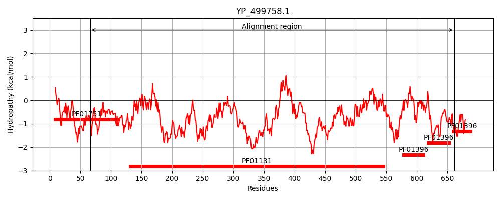
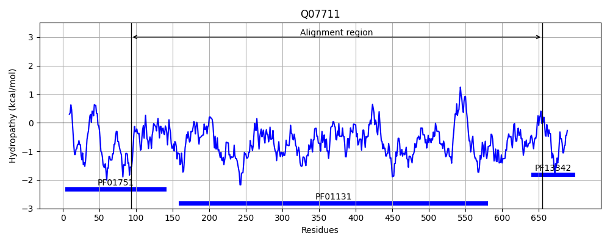
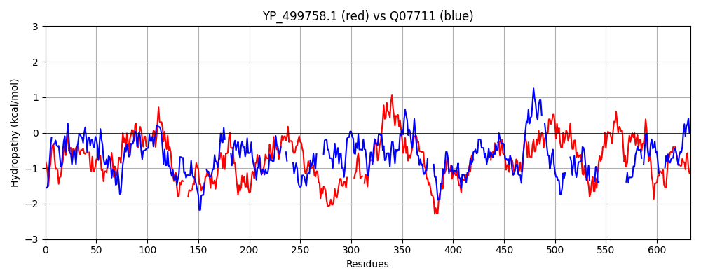

Hit Accession: Q07711
Hit TCID: 3.A.7.7.1
Hit Description: gnl|BL_ORD_ID|12290 gnl|TC-DB|Q07711|3.A.7.7.1 DNA topoisomerase I (EC 5.99.1.2) (Omega-protein) (Relaxing enzyme) (Untwisting enzyme) (Swivelase) - Staphylococcus aureus.
Mach Len: 633
e:0.000000
Query TMS Count : 0
Hit TMS Count: 0
TMS-Overlap Score: 0.000000
Predicted Substrates:CHEBI:4291;deoxyribonucleic acid
BLAST Alignment:
Score: 356 , Bit scores: 141 bits, E-value: 3.6e-35, Alignment length: 633, Percentage identity: 24
Query: 66 VKELKKHAKKAKNVFLASDPDREGEAIAWHLSKILELEDSKE-NRVVFNEITKDAVKESFKN--PREIEMNLVDAQQARRILDRLVGYNISPVLWKKVKK-----GLSAGRVQSVALRLVIDRENEIRNFKPEEYW----TIEGEFRYKKSKFNAKFLHYKNKPFKLKTKKDVEKITAALDGDQFEITNVTKKEKTRNPANPFTTSTLQQEAARKLNFKARKTMMVAQQLYEGIDLKKQGTIGLITYMRTDSTRISDTAKVEAKQYITDKYGESYTSKRKASGKQGDQDAHEAIRPS------STMRTPDDM-KSFLTKDQYRLYKLIWERFVASQMAPAILDTVSLDITQGDIKFRANGQTIKFKGFMTLYVETKDDSDSEKENKLPKLEQGDKVTATQIEPAQHYTQPPPRYTEARLVK----------------TLEELK-IGRPSTYAPTIDTIQKRNYVKLESKRFVPTELGEIVHEQVKEYFPEIIDVEFTVNMETLLDKIAEGDITWRKVIDGFFSSFKQDVERAEEEMEKIEIKDEPAGEDCEICGSPMVIKMGRYGKFMACSNFPDCRNTKAIVKSIGVKCPKCNDGDVVERKSKKNRVFYGCSKYPE-CDFISWDKPIGRDCP 661
+K++ K K V +A+DP REGE IA+ + L++ D R+ + +++++FKN P+E +AR + D LVG N+S K ++ + GRV S L +V +REN I+ FK ++++ TI + + K++ KF +++ + + D+ +T + +T++ K+ P + S LQ++ K A++T+ +AQ LYE KK LITY RTDS I++ K + I Y + + + I PS + + T +D K L +++ +YK I + + M +T +++I + F G+ I+ GF L + K E +P E+ ++V +++ + T PP RYTE L+K TL+E+K +G P+T A I+ ++K Y++++ + T+ G + ++ + + + T E L+ I++G+ K D F ++ + +++ E E+K++ + K +I KCP C++G +++RK FYGC++Y C+F K + + P
Sbjct: 93 IKKIFKE-NKIDEVIIATDPAREGENIAYKILNQLKVTDKVTIKRLWLTSKVESSIRKAFKNILPKEKTYGFYKEGRARELSDWLVGINLSRHFTKISRELGNDGVIHIGRVSSPTLNMVYNRENNIKGFKGKKFYKVSATINKDEQEVKTELKNKF-DSEDELHEFLFENDITDLT-----QKGLVTDIEKEIGYTMPPKFYDLSALQEDMNDKYKISAKRTLEIAQTLYE----KK-----LITYPRTDSRYITEDEKEMLLENI------DYLKEITKINLNNELTNNSLINPSKIEDHYAILITGNDFNKVDLKEEEINVYKSILQNVAMNFMDKEQYETTTIEIAVKKLMFEVKGKIIQDNGFKALLNKQK-----TSEETIPNFEKNEEVD-IELDLLEKETTPPKRYTEKTLLKAMANPIETLEDEGLKSTLKEVKGLGTPATRADIIENLKKNKYIQVQKNKIYITKNGILACLLLEGHL--LSKPDLTGQWEKYLNGISKGE----KDDDSFINTINEMIKKTINE----EVKNK--------------------------ESIQKVAKEKVSTNNI-AKCPACDNGYLIDRKG-----FYGCTEYNNGCEFTIPKKLLEKSIP 655 | Protein Hydropathy Plots: |
|---|
|  |  |
Pairwise Alignment-Hydropathy Plot:
|
|---|
|  |